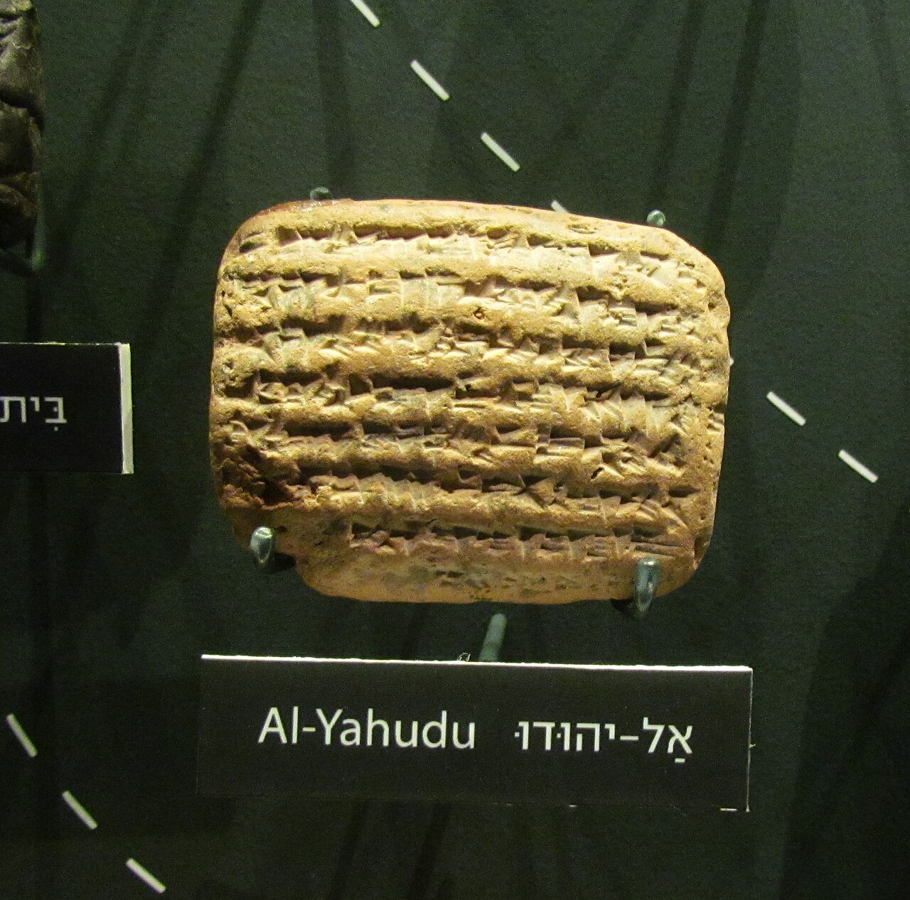
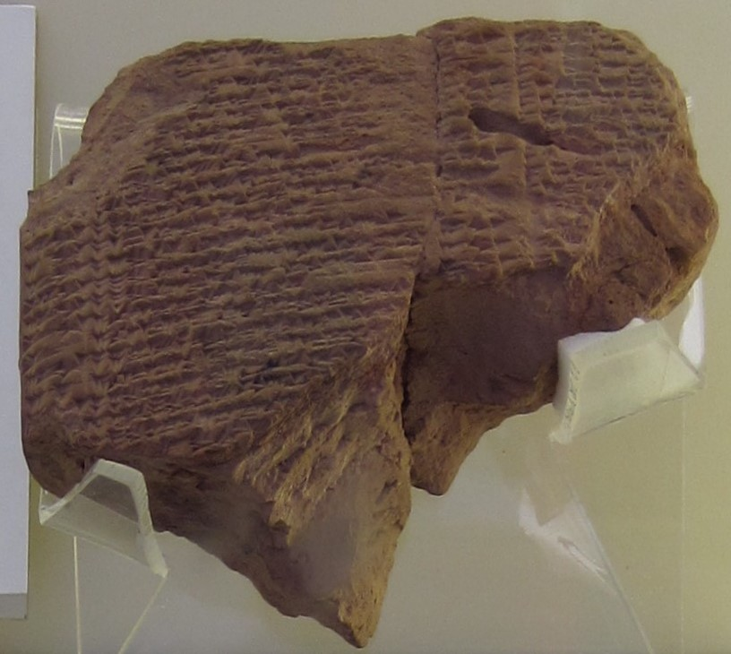
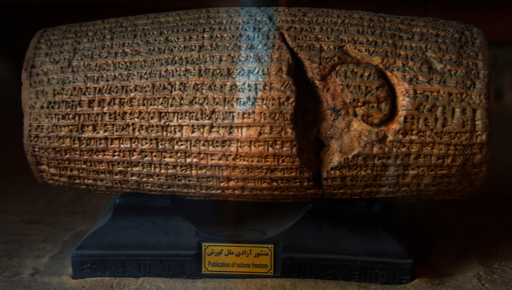

Cuatro mil seiscientas personas en una lista de escribano, o setenta años de tierra desierta. Las dos cifras están en la Biblia.
Jeremías 52 lleva la contabilidad. Tres mil veintitrés personas en el año séptimo de Nabucodonosor, ochocientas treinta y dos en el año dieciocho, setecientas cuarenta y cinco en el año veintitrés. Suma: cuatro mil seiscientas. Es una lista de escribano, con la sobriedad de un registro administrativo, y es hoy la cifra bíblica que la investigación considera más fiable.
2 Crónicas 36 no da cifras. Dice que los que quedaron fueron llevados a Babilonia, y que la tierra descansó setenta años, hasta cumplir los sábados que se le habían negado.
Entre esas dos páginas no hay una discrepancia de datos. Hay dos géneros distintos de escritura sobre el mismo acontecimiento, y aprender a distinguirlos es, en el fondo, todo lo que esta serie ha intentado hacer.
La pregunta parece sencilla: ¿cuánta gente quedó en Judá después del 586 a.C.? Y tiene respuestas muy distintas según a quién se le pregunte, porque cada autor pondera de otro modo las prospecciones de superficie, los sitios excavados y lo que significa la ausencia de cerámica.
La discusión se conoce como el debate del mito de la tierra vacía, y es uno de los más interesantes de la disciplina porque no enfrenta a creyentes con escépticos: enfrenta a arqueólogos entre sí sobre cómo se lee un vacío. Vale la pena verlo sobre el mismo mapa.
Lo que hoy se puede sostener sin forzar nada es la posición intermedia: la tierra no quedó vacía, pero el colapso fue real y muy desigual. Destrucción selectiva de los centros urbanos, militares y administrativos; continuidad rural en Benjamín y al sur de Jerusalén. Y una cifra que conviene retener por lo modesta: la Jerusalén posterior al destierro no tendría más de mil quinientos habitantes.
Hay además un dato incómodo para los dos extremos, señalado por Bob Becking: el «retorno a Sión» tampoco dejó huella demográfica. Las prospecciones muestran un descenso a comienzos del siglo VI y un aumento muy lento durante todo el período persa. Ni el destierro vació la tierra ni el regreso la repobló de golpe.
Del otro lado del destierro hay un corpus de documentos que ha cambiado por completo la imagen del exilio, y hay que presentarlo con una advertencia por delante.
El corpus de Al-Yahudu —unas doscientas tablillas cuneiformes de contratos, recibos, préstamos y arrendamientos— no tiene procedencia arqueológica excavada. Llegó al mercado de antigüedades por vías desconocidas, posiblemente por saqueo, y se encuentra hoy en colecciones privadas y en el British Museum. Los textos se consideran genuinos por criterios internos: onomástica, formularios, sellos. Pero la ausencia de contexto excavado limita lo que se puede inferir de ellos, y plantea un problema ético que un blog serio no puede saltarse. Se usan aquí con esa reserva explícita, y no como si fueran el producto de una excavación regular.
Dicho eso, lo que documentan es notable. Los deportados judaítas fueron asentados en grupo, en comunidades identificables —una de ellas llamada āl-Yāhūdu, «la ciudad de Judá»—, en tierras que había que rehabilitar, bajo un estatuto de arrendatarios dependientes del rey: recibían parcelas a cambio de servicio, trabajo y pago de tasas. No eran esclavos, y tampoco hombres libres plenos. Cultivaban dátiles, cebada, trigo, especias, lino. Firmaban contratos, prestaban dinero, se casaban, heredaban. Aparecen intermediarios prósperos que ofrecían crédito a otros judaítas.
La onomástica es lo más elocuente: nombres yahvistas transcritos al acadio conviven con nombres babilónicos dentro de la misma familia. Conservación de identidad y acomodación cultural a la vez, en la misma casa.

Y hay un segundo conjunto, este sí de excavación regular. Robert Koldewey encontró en Babilonia, en un edificio abovedado cerca de la Puerta de Ishtar, unas tablillas administrativas del año trece de Nabucodonosor, hacia 592 a.C. Son listas de raciones de aceite de sésamo para cautivos y artesanos, y entre los nombres figura «Ya'u-kīnu, rey de la tierra de Yahudu» —Joaquín, el rey deportado en 597— junto con cinco «hijos del rey de Judá», con asignaciones diferenciadas.

Una lista de raciones de aceite confirma así lo que parecía el final más novelesco del libro de los Reyes: que el rey depuesto siguió siendo tratado como rey en la contabilidad del imperio que lo depuso. Arresto honorable, no encarcelamiento anónimo.
Y aquí se cierra la comparación que quedó abierta en la tercera entrega. Asiria dispersaba; Babilonia agrupaba. Los israelitas del norte fueron repartidos en grupos pequeños por territorios distantes y se disolvieron. Los judaítas fueron asentados juntos, con sus nombres y su onomástica, y a los cincuenta años seguían siendo reconocibles como grupo. Muchos no volvieron nunca: el corpus documenta una diáspora babilónica estable durante generaciones, que es la base histórica del judaísmo babilónico posterior. La política imperial de un enemigo explica la supervivencia de una identidad mejor que cualquier virtud atribuida a ella.
El final convencional de esta historia es un decreto de Ciro que autoriza el regreso, y el objeto que suele ilustrarlo es el Cilindro de Ciro. Conviene separar las dos cosas, porque su confusión es probablemente el error divulgativo más extendido de todo el período.

El cilindro es una inscripción de fundación mesopotámica al uso, del 539 a.C., escrita en babilonio y destinada a enterrarse en los cimientos de la muralla de Babilonia. Está redactada desde un punto de vista puramente babilónico: presenta a Nabonido como un rey impío que descuidó el culto, y a Ciro como el elegido de Marduk para restaurar el orden. Devuelve las estatuas de los dioses a sus santuarios mesopotámicos y permite el regreso de poblaciones desplazadas dentro de Mesopotamia.
Lo que no dice conviene enumerarlo: no menciona a los judíos, ni a Judá, ni a Jerusalén, ni al Templo de YHWH, ni a Israel. No es un decreto pro-judío ni un edicto general de repatriación. Y no es una declaración de derechos humanos: el British Museum lo dice sin rodeos —tal concepto habría sido completamente ajeno a los contemporáneos de Ciro, y el cilindro no dice nada sobre derechos humanos. Esa lectura es un producto de la propaganda cultural del siglo XX, y sigue arrastrándose incluso en contextos institucionales.
Lo que el cilindro sí documenta, y es valioso, es una política imperial de restauración de santuarios locales y de conciliación con las élites religiosas de los territorios conquistados. Ese marco general hace plausible que Ciro autorizara la reconstrucción del templo de Jerusalén. Es analogía y contexto, no confirmación.
El «edicto» del libro de Esdras es otro documento, y hay dos versiones divergentes: Esdras 1:2-4, en hebreo, con Ciro hablando como si YHWH fuera su dios, y Esdras 6:3-5, en arameo, con formato de memorándum administrativo. Lester Grabbe los evaluó uno por uno: la primera es la menos creíble de todas; la segunda probablemente refleja un decreto real revisado por escribas judíos; la carta de Tatenai es la más creíble del conjunto. Documentos auténticos reelaborados en distinto grado, no falsificaciones puras. La regla práctica es sencilla: el cilindro y el edicto son dos documentos independientes que no se validan mutuamente.
Queda el cierre, y no está en la tierra. Está en la biblioteca.
Todo lo que esta serie ha recorrido —dos tronos, cuarenta reyes, dos derrumbes— nos ha llegado a través de dos relatos que cuentan la misma historia de manera sistemáticamente distinta. El libro de los Reyes se compone entre el final del siglo VII y el destierro. El libro de las Crónicas se compone en época persa tardía o helenística temprana, probablemente en el siglo IV a.C.: unos dos siglos y medio más tarde.
Las diferencias no son de detalle, son de programa. Y hay cinco que conviene tener a mano cada vez que se lea un pasaje de esta historia.
De ahí la regla práctica con la que se cierra la etapa: en caso de divergencia, Reyes tiene prioridad como fuente para la monarquía; Crónicas es fuente primaria para la época persa que lo produjo, no para los siglos que narra.
Es una regla técnica, y aun así dice algo que va más allá de la técnica. Los dos libros son documentos históricos fiables: solo que de épocas distintas. Reyes nos informa con precisión sobre lo que una corte del siglo VII necesitaba creer; Crónicas, sobre lo que una comunidad del Segundo Templo necesitaba recordar. Ninguno de los dos nos entrega el pasado sin más. Los dos nos entregan, con una nitidez extraordinaria, el momento en que alguien decidió cómo había que contarlo.
Y eso es, en realidad, lo que se excava. La tierra devuelve muros, ceniza y puntas de flecha. Los textos devuelven algo más difícil de datar y más interesante de leer: la forma que toma una catástrofe cuando hay que explicársela a los nietos.
Una pieza más, fuera de las siete entregasLa serie acaba aquí, pero queda algo por mirar. Un corte transversal por el ángulo suroeste de Laquis en 701 a.C., dibujado desde cero, con cada elemento etiquetado según la fuente que lo atestigua: el relieve de Nínive, la excavación, los prismas de Senaquerib y la Biblia. Al filtrar por los prismas, la escena entera se apaga, y ahí está el hallazgo: los anales asirios no nombran Laquis ni una sola vez.
Abrir el corte →Sobre la demografía del siglo VI: O. Lipschits, The Fall and Rise of Jerusalem (2005) y sus trabajos de 2003 y 2011; A. Faust, PEQ 135 (2003) y obra posterior; H. Barstad, The Myth of the Empty Land (1996), y R. Carroll. Sobre la ausencia de huella demográfica del retorno, B. Becking (2010).
Sobre Al-Yahudu: L. Pearce y C. Wunsch, Documents of Judean Exiles and West Semites in Babylonia (CUSAS 28, 2014), y C. Wunsch (2022) para el resto del corpus. Las tablillas de raciones de Joaquín fueron publicadas por E. Weidner en 1939 y se conservan en el Vorderasiatisches Museum de Berlín.
Sobre el Cilindro de Ciro, la ficha del British Museum (BM 90920) y su declaración expresa sobre la lectura como carta de derechos humanos. Sobre los documentos persas de Esdras, L. Grabbe, «The 'Persian Documents' in the Book of Ezra: Are They Authentic?» (2006). Sobre Crónicas frente a Reyes: S. Japhet, G. Knoppers, H. G. M. Williamson e I. Kalimi.